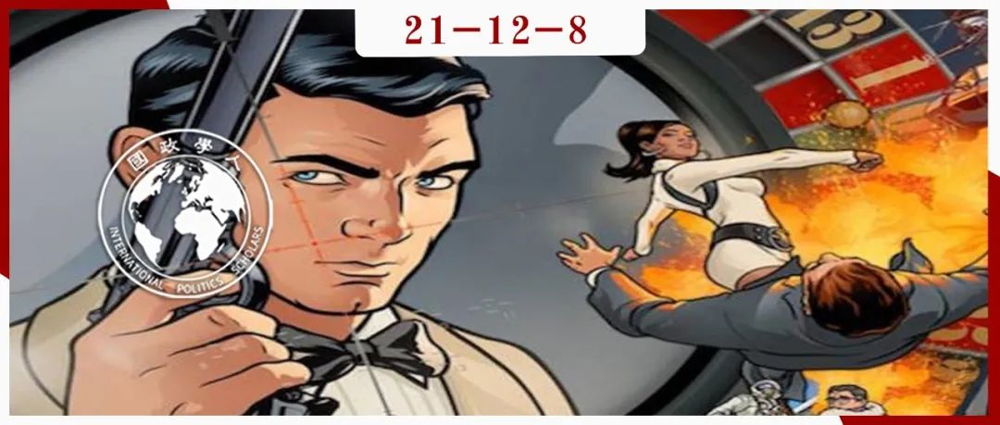

收录于合集
#《国际关系前沿》2021年第12期 22 个
#国际安全 4 个

作品简介
作者： Keren Yarhi- Milo，哥伦比亚大学政治科学系和国际公共事务学院教授，阿诺德·萨茨曼战争与和平研究所主任。她的研究领域集中在国际安全，危机谈判，心理学与情报学。进入学术界前她曾在以色列军队和情报部门服役。
编译： 郑敖天（国政学人编译员，佩珀代因大学公共政策学院）
来源： Keren Yarhi-Milo. “In the Eye of the Beholder: How Leaders and Intelligence Communities Assess the Intentions of Adversaries.” International Security , vol. 38. no. 1. (Summer 2013): 7-51 .
归档： 《国际关系前沿》2021年第12期，总第39期。

内容摘要
作者通过对国际关系史上的三个对抗性国家关系案例的分析，提出了在国际关系中对对手的长期政治意图进行评估的“选择性注意理论”。该理论认为，决策者个人的认知偏见会极大地影响他们对国际关系中不同的指标和信号的重视程度。这也解释了为什么很多决策者会根据自己的期望或理论，选择忽视机会成本更高的信号，而选择重视机会成本更低，但更加“生动”（即更符合决策者个性并让他们在感情上更投入）的信号。这也从侧面证明了一个高度组织化的情报机构对国际关系决策的重要意义。
文章导读
在当代国际关系学界中，曾经在安全政策研究中占据主流地位的理性主义模型正在遭到越来越多的质疑。但问题是：在理性主义无法提供答案的情况下，研究者们应当如何理解国际关系决策的形成过程？作为一名前以色列情报部门的军官，作者在比较了两种传统的理性主义模型，即行为理论和实力理论之后，提出了自己的“选择性注意理论”。
作者认为，在现实的国际关系决策过程中，决策者往往会根据自己的理论、期望、需求和个性来选择自己重视的国际政治信号。决策者个人的信念也会影响他们对信号的解读。在这种情况下，那些缺乏相关机构（如称职的情报机构）支持的决策者的决策过程将更加容易被对手预测。
在这种情况下，情报机关的意义变得更加重大。作为一个专业性集体，情报机关善于从专业性的视角来分析对手的意图。与此同时，情报机关对部分重要信号的关注（如军事情报）也可以在客观上防止其被更“生动”或者更“情绪化”的信号所干扰。但这种“专业性”本身也可能对情报机关和决策者的沟通产生消极影响。
作者随后讨论卡特政府和里根政府时期美国情报机关对苏联国家意图的评估，以及二战期间英国决策者对纳粹德国的错误评估。作者由此得出的结论是：在一些特定情况下，决策者可能会对一些极为明显的信号展开激烈的辩论，而对一些在情报机关看来严重缺乏价值，却更“私人”的信号坚信不疑。从另一个角度来讲，决策者们也不应在不了解对手对政治信号的解读习惯的情况下，假设自己释放的机会成本极高的信号能够实现其设计目标（如威慑或安抚对手）。
2012年，前美国驻华大使骆家辉在一篇文章中表示，美国对中国的战略意图充满了“问号”和“关切”，而中国也对美国是否有破坏中国社会经济增长的长期意图表示警惕。这说明：冷战后走向多极化的世界中，大国间相互的意图和威胁评估依然是塑造目前国际关系的主要力量。在这一背景下，国家应当如何分析对手的政治意图，和带有目的性的释放政治信号呢？
作者首先分析了分析国家意图的两个理性主义模型。首先，实力理论认为决策者应当依据对手的国家实力来判断其意图。在这种情况下，国家实力的重大改变，如单方面的裁军，应被视为对手意图改变的重要信号。与此同时，行为理论则认为，那些非基于国家实力的行动，如主动加入有约束力的国际组织，才能更加证明对手的意图。该理论认为，国家行为并不是完全基于整体实力，而是基于决策者对行为成本的评估，以及其消耗的资源能否再生。
作者认为，以上两种理论都无法合理地解释现实中的国际决策。她因此提出了第三种理论：“选择性注意理论”。该理论认为，基于决策者个人的感知偏见的个性、理论、兴趣、期望和需求才是影响他们对政治信号进行评估的根本因素。一些决策者可能会忽视机会成本高昂的信号，而重视机会成本较低，但更为“生动”（即更符合决策者个性并让他们在感情更投入）的信号。
作者认为，英国在二战初期对纳粹德国政治意图的错误解读正是一个显著的历史例子。当时英国的决策层对德国将莱茵兰地区军事化的行为的影响争论不休（尽管该行为已经明显违反了凡尔赛条约），却相信了德国高层个人做出的政治承诺。在此期间，英国情报部门对德国军事力量的评估却被忽视了。
作者随后根据对历史和当代经验的评估，将对手政治意图分为三个类别：扩张主义，机会主义和维持现状。奉行扩张主义的对手往往会对实现超越其领土边界的权力和影响力表现出强烈的决心。机会主义国家不会主动寻求权力地位的改变，但希望在有限的权力分配中实现对自己有利的变化。而希望维持现状的国家则只想保持相对的权力地位。
作者强调：关于政治意图的信息可能是复杂的、模棱两可的，并且非感性的，因此需要大量的解释工作来区分有意义的信号和噪声。在这种情况下，决策者不一定会发现或正确解释机会成本高昂的政治信号。在最危险的情况下（如二战前的张伯伦政府），代价高昂的信号可能会被忽视，而低成本的信号却被视为提供了关键信息。这使情报组织的意义更加重要。
作者认为，一个高效且具有高度组织性和专业性的情报组织可以在一定程度上避免决策者在判断政治信号时陷入最坏的境况。情报组织可以长期将大量的资源投入到专业性的、量化的以及非感性的信号的搜集中。而情报部门的组织性也使其在过滤噪音信号上更有优势。
尽管如此，作者并不认为决策者对信号的感性认知是永远错误的。她举出了冷战末期里根的例子。在与戈尔巴乔夫的接触中，里根敏锐地感觉到戈尔巴乔夫并不是一个扩张主义者，而是拥有一套自己的理论和政治期望。而这一切都是美国的情报机关未能感知到的。
与此同时，情报机关的专业性也影响到了他们与决策者的沟通。布热津斯基就认为，苏联的情报机关在“政治性”上更弱，导致其很难对决策者产生影响，也使苏联的相关决策更加具有不确定性。美国前中情局局长斯坦斯菲尔德·特纳也曾说过：“每当我向卡特总统提供简报时，我必须始终牢记‘他上周会见了勃列日涅夫’。我从未见过勃列日涅夫，所以如果他对勃列日涅夫明天要做什么的解释与我们的解释不同，我不得不相信他也许比我们更了解勃列日涅夫。”
作者在文章的最后部分强调：决策者很少会对什么构成了真正“可信”的信号达成一致。情报机关从专业视角搜集的具有极高机会成本的信号，也很有可能会被需要解释许多不同信号的决策者忽视。但是从历史经验上看，情报机关至少可以避免决策者陷入最糟糕的决策失误中。与此同时，情报机关也不具有“可以进入对手脑中”的能力，其本身也面临着包括官僚主义在内的各种局限性。但作者的研究最终证实了她在文尾为决策者们提出的一个建议：不要先入为主的认为对手能够“正确”解读你释放出的信号。在很多时候，政治信号并不能实现它的“设计目的”，无论这一目的是威慑还是安抚。
译者评述
作为一名曾在军事情报机构服役的国际关系学者，作者对决策者和情报机关之间的关系和互动拥有第一手经验。在文中，她比较成功的将这一经验实现了理论化。通过将历史案例比较和理论研究进行结合，作者提出了自己对国际关系决策过程的解释模型。作者提出的“选择性注意理论”可以被视为一种“建构现实主义”视角。通过将决策者的个性、诉求、理论倾向等因素带入到基于现实主义的国家安全决策中来，作者成功地为国家安全研究提供了新的视角。
但本文的美中不足之处在于：作者虽然指出，并试图弥补理性主义在国家安全政策制定过程上的盲点，但她最终没能为情报机关和决策者的关系提供一个规律性的结论。但这或许也正折射了国际关系中的不确定性。
词汇整理
次长，政务次官（英） ** Undersecretary**
（数量上的）优势 Preponderance
（国家间关系的）缓和，缓解 Détente
反复重申 Reiterate
责编 | 徐一凡 姚寰宇
排版 | 屈媛媛 黄伊蕾
文章观点不代表本平台观点，本平台评译分享的文章均出于专业学习之用, 不以任何盈利为目的，内容主要呈现对原文的介绍，原文内容请通过各高校购买的数据库自行下载。

国政学人
支持学术公益与知识传播
微信扫一扫赞赏作者 __赞赏
已喜欢，对作者说句悄悄话
取消 __
发送给作者
发送
最多40字，当前共字
上一页 1/3 下一页
长按二维码向我转账
支持学术公益与知识传播
受苹果公司新规定影响，微信 iOS 版的赞赏功能被关闭，可通过二维码转账支持公众号。